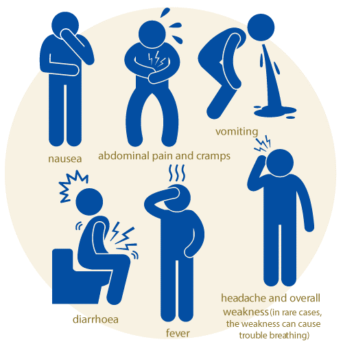

Get aware about Gastrointestinal infections!
GTI
Gastrointestinal infections are viral, bacterial or parasitic infections that cause gastroenteritis, an inflammation of the gastrointestinal tract involving both the stomach and the small intestine. Symptoms include diarrhea, vomiting, and abdominal pain. Dehydration is the main danger of gastrointestinal infections, so rehydration is important, but most gastrointestinal infections are self-limited and resolve within a few days. However, in a healthcare setting and in specific populations (newborns/infants, immunocompromized patients or elderly populations), they are potentially serious. Rapid diagnosis, appropriate treatment and infection control measures are therefore particularly important in these contexts.
Causes
Viral:- Adenovirus
- Rotavirus
- Campylobacter
- E. coli
- Clostridium dificile
- Helicobacter Pylori
- Salmonella
- Shigella
- Staphylococcus aureus
- Yersinia enterocolitica
Symptoms
Alternative treatment
Dehydration is the main danger of gastrointestinal infections, so rehydration is important, but most gastrointestinal infections are self-limited and resolve within a few days. (Besides in specific populations)
The best ways to prevent gastrointestinal infection include:
- Proper hand-washing
- Disinfecting of contaminated surfaces with bleach
- Washing of soiled articles of clothing
- Identifying infected patients as soon as possible to implement extended infection control
- There are no vaccines for most gastrointestinal infections, except Rotavirus and Adenovirus (limited availability)
- For C. difficile: avoid prescribing antibiotics unnecessarily
Treatment measures for gastrointestinal infection include:
- Rehydration – oral and sometimes intravenous
- For many cases of bacterial gastroenteritis, only symptomatic treatment (for fever, diarrhea…) is required.
- Antibiotics are not usually recommended as they have no effect on viral infections, may cause side effects and overuse increases the risk of resistant bacteria developing.
- Antibiotics may be recommended in particularly severe cases of gastroenteritis, or if a specific bacteria has been identified as the cause.
Want to prevent diseases and know more about alternative treatment?
Get our app now!